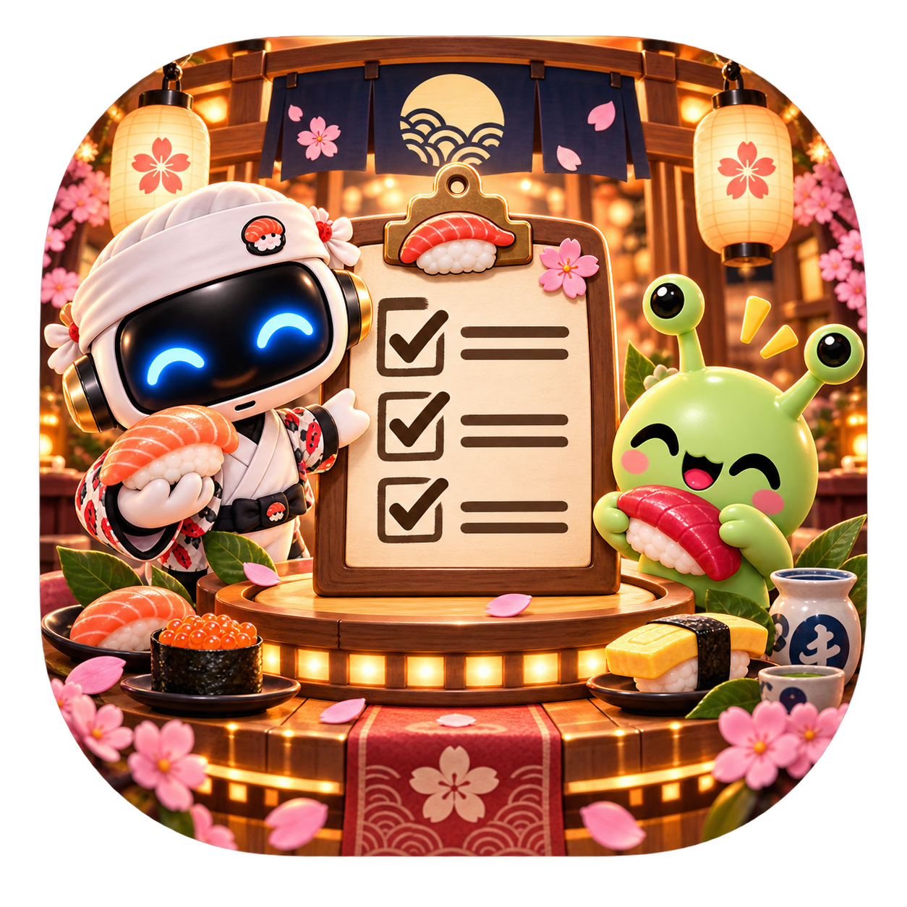
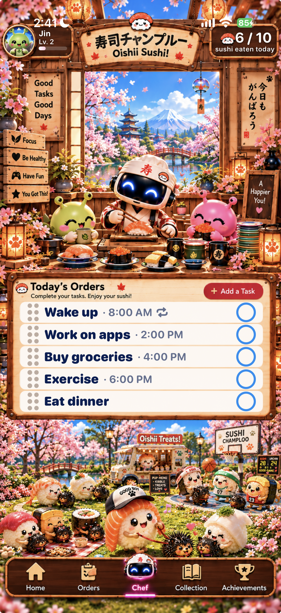
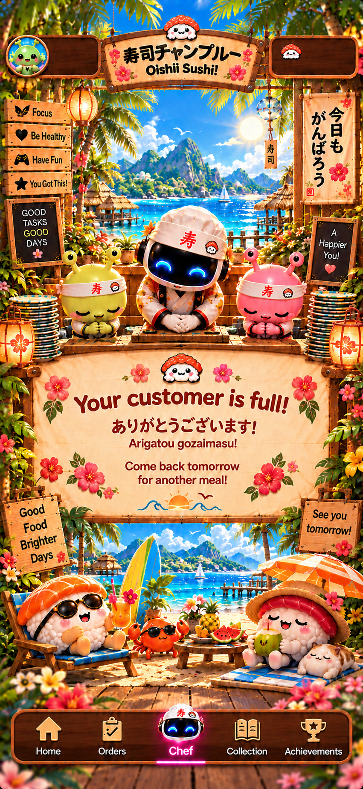
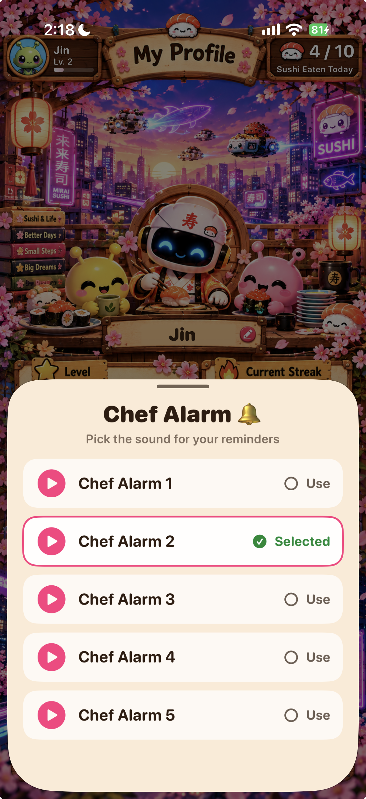

Itadaki Task: turning to-dos into sushi orders
A cozy SwiftUI task app where completing a task feels like serving sushi, feeding a customer, unlocking badges, and meeting tiny restaurant regulars.
Productivity that feels warm, not clinical
The idea was to build a task app for people who need visual motivation. Instead of a plain checklist, every task becomes an order at a sushi counter. Finishing work feeds the customer, raises your stats, and slowly opens more of the restaurant world.
Sushi Metaphor
Tasks become sushi orders with a 10-sushi daily meal limit.
Rewards
Achievements, badges, collection customers, and profile stats.
Reminders
Date, repeat, category, and Premium Chef Alarm sounds.

Orders, categories, and reminders
Add a Task
Users can enter a task title, choose date/time, turn reminders on, set repeat behavior, and categorize tasks like Focus, Self-Care, Fitness, Learning, Social, or Other.
Orders List
The Orders board shows open work in a playful wooden panel. Tasks can have scheduled times or appear without one when the user wants a simpler order.
Daily Limit
At 10 sushi, the customer is full. The Chef screen switches to a thank-you state and invites the user to come back tomorrow.





Badges, collection customers, and profile stats
The app tracks lifetime sushi eaten, daily best, current streak, category completions, achievements, and collection customers. The profile page gives that progress a home, so users can see momentum without digging through settings.
18 badges
Milestones for first task, full plates, streaks, totals, and task categories.
13 customers
Unlocked characters make progress feel collectible and personal.
Chef Alarm sounds from Profile
Premium unlocks Chef Alarm choices from the Profile screen. The alarm picker keeps reminders inside the sushi-restaurant world instead of feeling like a generic phone alert.
Official Website north_east